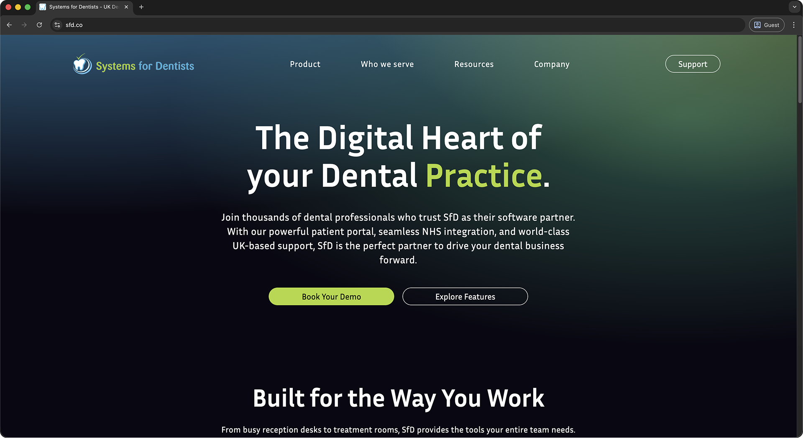

BudgetManaged a £1,000 budget to procure a developer.
SfD website
Systems for Dentists Ltd
Redesigning a dental software company's website in two weeks to fix unclear user flows, boost SEO and make support easier to reach.
Visit the live site
- My role
- Project lead: user research, user flows, wireframing, UI design, prototyping
- Team
- James Rothwell, MD
Adam Vernon, CGO and web dev
Niral Malani, web dev - Duration
- June 2025, two-week deadline
01
Problem
The problem
The existing website was old and dull. There was no clear user flow and, worst of all, it was all plain blocks of text. This led to user disengagement.
What's the end goal?
The goal was to create a modern website focused on driving business growth. The new website needed to boost SEO, advertise the product and optimise customer support.
Requirements for success
Business growthBoost sales and simplify access to support.
Improve SEODrive organic visibility and improve search rankings.
Streamlined navigationIdentify and create clear user flows.
Dark modeReinforces a modern, brand-aligned experience.
Meet the deadlineRapidly develop the website in 14 days.
02
Research
What are the user's needs?
There are two main user flows for people visiting the SfD website: Connect to a Technician and Book a Demo.
Compiling our findings
I gathered research by asking existing users what they thought of our website. Working as a support engineer, I was fortunate to see first-hand how they interacted with it. I also analysed competitor solutions to see how they approached the problem.
Connect to a Technician
This is the main user flow we needed to design around. The existing solution was well thought out: in just three steps the user could complete their task.
User clicks the 'Support Homepage' button from the SfD software.
User enters the one-time code from their technician, then clicks 'Connect'.
User opens the 'LogMeIn Rescue' file to start the remote session.
Room for improvement
The original design of this page did create some issues. Just like the rest of the website, there was no clear hierarchy. This made the support process slower and lowered the task completion rate.
03
Design
Designing the skeleton
The brief said we'd carry over the content from the existing website. To optimise the design, we had to organise that content into digestible chunks.
SoftwareDetails on the product and the transition process.
SupportAll the resources customers would need.
About usHelpful information about the business.
MoreEverything else, including testimonials and resources.
Brand identity
To match the company's branding, I used the three colours from the logo: cyan, lime green and white. After experimenting with them, I chose a dark blue background, which was visually appealing and created good contrast. Click a swatch to copy it.
Catch up with the team
To make sure the design was heading in the right direction, I needed other perspectives. I shared my ideas with Adam and James (CGO and MD at SfD) and got useful feedback on how we could improve SEO and engage users from a business perspective. That business focus steered later iterations.
Searching for a dev
With most of the Figma mockups ready, I led the search for a developer within a £1,000 budget. After reviewing portfolios on Fiverr, we selected Niral for her strong alignment with our desired style.
Design collaboration
After creating the core pages, I handed the remaining design work to Niral. Through iterative feedback using Figma's commenting tools, we refined the design before moving into development.
04
Outcome
Satisfied customers
After launch we had what felt like never-ending positive feedback. Users were delighted that the experience became quick and reliable, and many said the background animation made the site feel alive.
A significant boost in SEO
After SEO optimisations and cross-browser testing, our site rose from 4th to 1st for “SfD” and now appears alongside top competitors for “Dental Software”.
An improved workflow for the business
Previously hesitant, the sales and support teams now proudly direct users to our site, which provides valuable resources for both end users and internal operations.
05
Reflection
Time constraints
The biggest constraint was time. Producing a new website in two weeks while working my normal job was difficult. By the time we finished I was proud, but also critical of certain design decisions.
Feedback
While the launch was successful, several UI refinements were identified, such as inconsistent text sizing, section spacing and UI styling. For example, the nav bar was distracting: the padding was large, and because it was sticky it took up a lot of the screen.
During development we explored different options for the navigation headings. One label, “Resources”, didn't communicate its content as clearly as a more direct term like “Help”. I suggested alternatives at the time, but as a team we aligned on the final direction. Looking back, and supported by customer feedback, clearer terminology would likely have improved usability. It's something I'd push for more strongly in future.
What's next?
Next, I plan to implement the UI refinements identified in the post-launch review: fixing text sizing and section spacing, and revisiting the navigation structure to give a better user experience.
There's also an opportunity to improve content spacing across the site. The layout is text-heavy, and more visual elements would break up content and improve usability. Imagery was limited to avoid showcasing an outdated product, but as the next iteration develops, more relevant visuals can make it more engaging and balanced.
Next case study
Airline booking redesign